Home
The Dogs of Virginia Tech
Just 10 minutes from Virginia Tech lies an Animal Shelter.
The Christiansburg Animal Care and Adoption Center
I volunteer at the Christiansburg Animal Care and Adoption Center. There
are lots of dogs living there that haven't been fortunate enough to be
adopted just yet. As a volunteer, I get to come to the ACAC and walk these
dogs around the shelter and the nearby park.
In an effort to give the ACAC (and the dogs I've walked) some publicity,
I've created this page to talk about all the friends I've made there.
You can find information about them
here.
Meet the Dogs
Here are the dogs I've walked. I usually try to get a few pictures of them, so you can put a face to a name.
Dexter
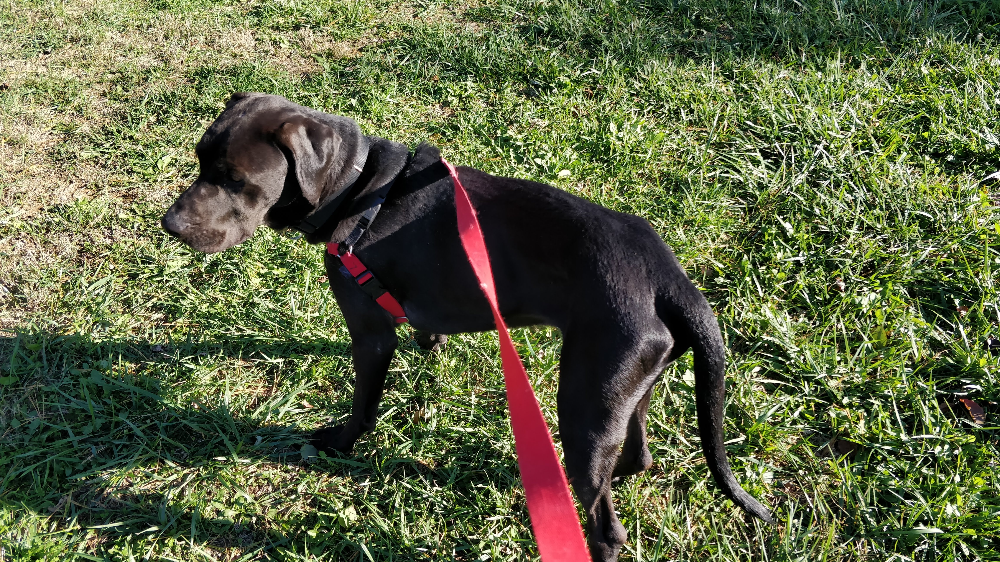 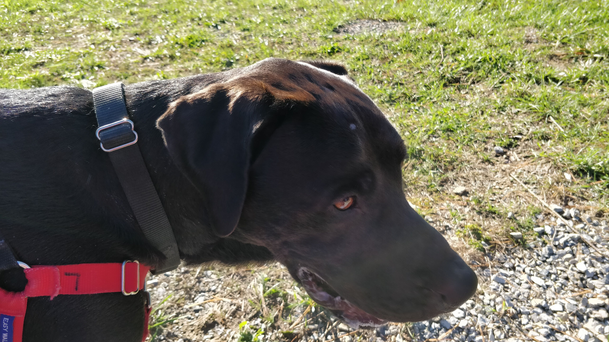
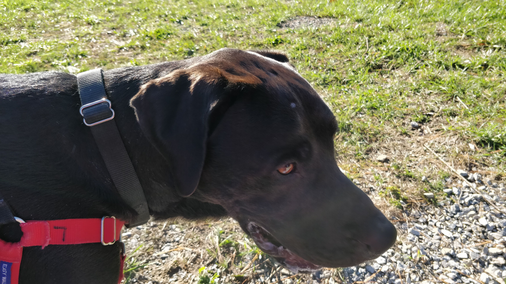
Dexter is a black lab. He was the first dog I walked at the ACAC, and he's
really sweet. He's pretty large too, as most labs are. His size and
demeanor might be intimidating, but don't be fooled - I've walked him
multiple times and he's never been aggressive or defensive.
When I took Dexter out for a walk, he was a bit of a leash-puller, but he
listened to me (maybe not my words.. but he at least responded to my tugs)
and was very obedient. He also really enjoyed breaking into a sprint every
now and then! Like most dogs, he took in just about any smell he could
sense, and would occasionally dart back and forth, trying to decide on
what to explore next.
Overall, he was a great dog to have the chance to meet and walk. It seems
like he'd make a great family member.
Old Joe
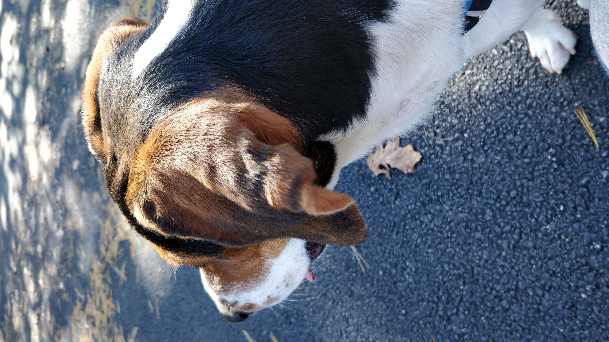 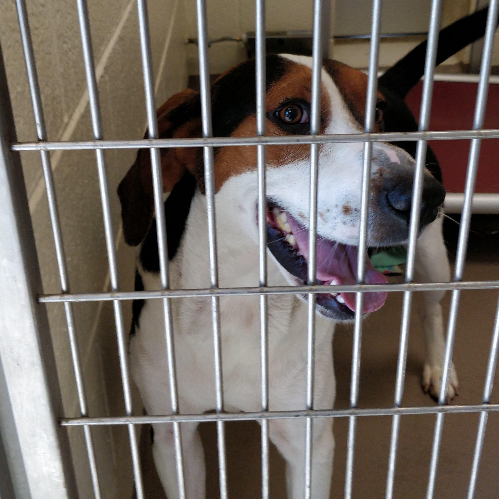
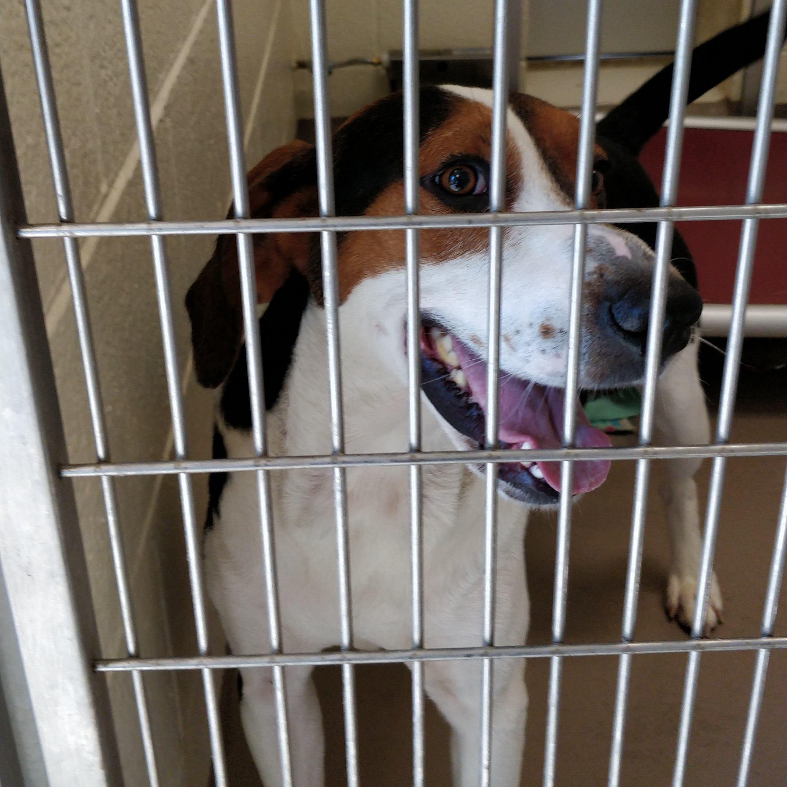
Old Joe is a hound. Even though his name suggests it, he doesn't seem as
old as you might think. When I unlocked his cage to put his collar and
leash on, he was barking like crazy and jumped all over me in excitement.
After quite a few minutes of attempting to get him leashed up (this
included him launching the collar off his nose straight into his water
bowl), I finally got down to business to taking him outside.
Outside his kennel, Joe's excitement never died down. In fact, it seemed
to get stronger. He would beeline to anything interesting he saw or
smelled, pulling me along for the ride. This made the walk a little more
difficult than others, but Joe would still isten to my tugs on the leash.
Getting some decent pictures of Old Joe was challenging, considering his
short span of attention, but I managed to get a few. Overall, he was very
pleasant to walk and spend some time with. Like most dogs there, poor Joe
didn't really want to get back in his cage. He actually ran away from me
through a doggy door before I could get his collar and harness off, which
was pretty funny.
I hope Old Joe gets a loving family. Despite his sporadic attention span,
he was very sweet and would make a great friend.
Nelly
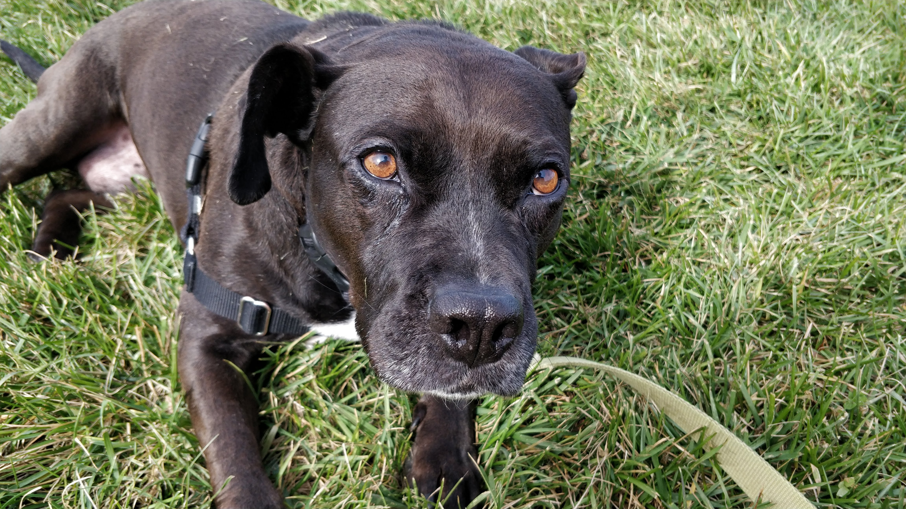 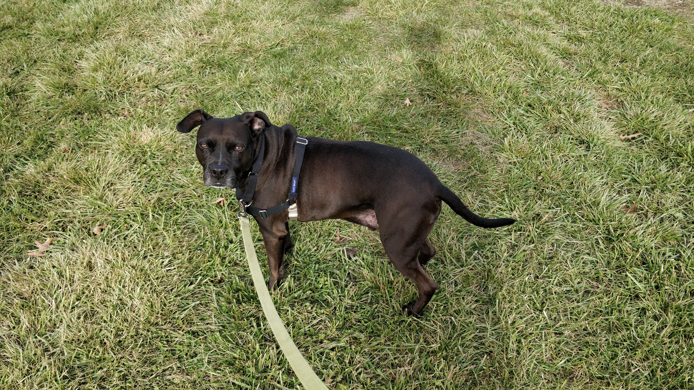 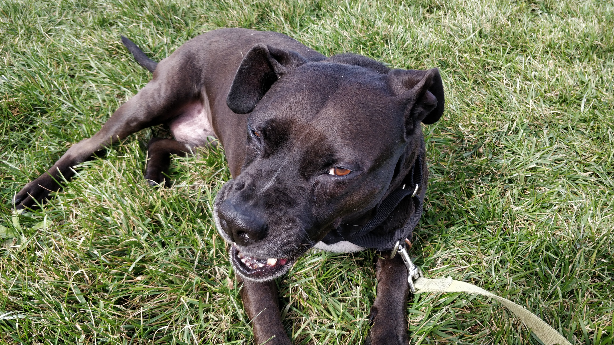
Nelly is the third dog I had a chance to walk at the ACAC. I'm not sure
exactly what breed he is, although it definitely looks like he's got some
Pit Bull in him. What made Nelly stand out to me was how quiet he was when
I saw him. All the dogs around him were yapping and barking (as they do
whenever somebody comes by) in excitement, but not Nelly! Instead, he was
lying on his bed, wagging his tail eagerly, and staring up at me.
When we left the building, Nelly was very calm, but still seemed to enjoy
the fresh air. He wasn't too keen on running around - rather, he liked to
take his time. He would occasionally roll over onto the ground and lie
down for a few minutes. He enjoyed some pets and behind-the-ear scratches
while he took those breaks.
Overall, Nelly was a very kind dog, with a sweet face and reserved
personality. There's no doubt a home out there for him with a very lucky
family!
Gilligan
 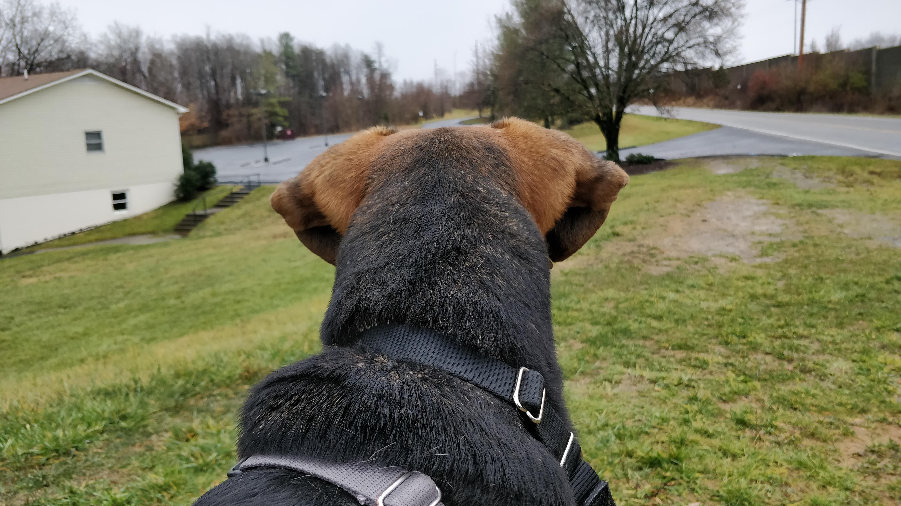
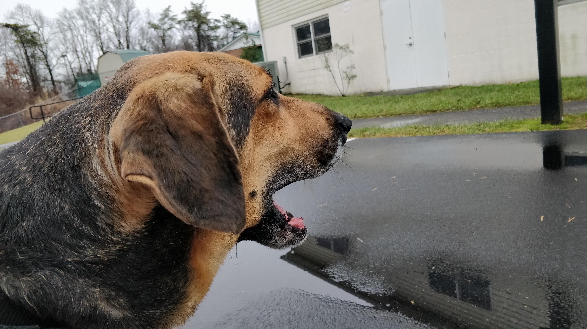
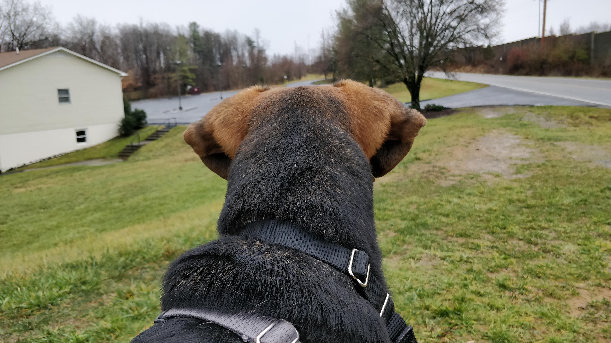
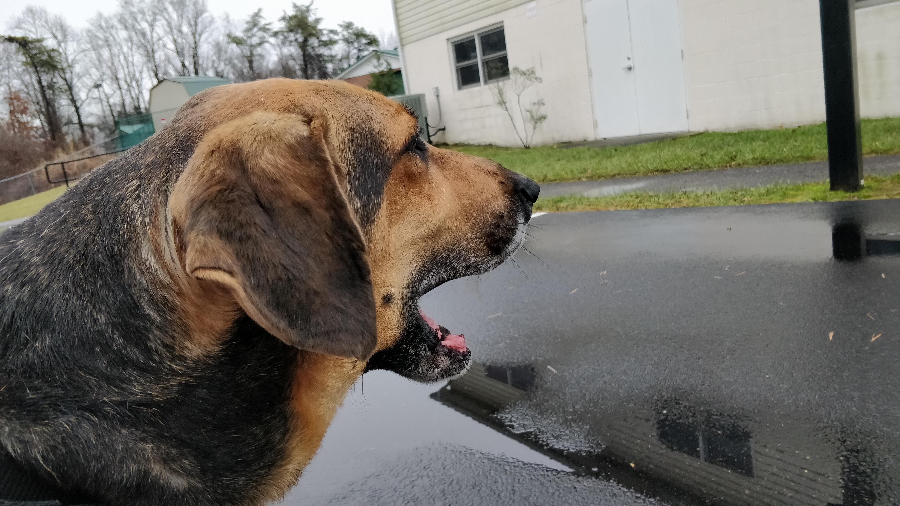
Gilligan is a hound/german shepherd mix, and an older gentleman. I got the
chance to walk him after Thanksgiving break, on a misty day. He seemed very
shy when I approached his cage to say hello. When I came back with a leash
and a collar, he came out of his shell a little, as he started wagging his
tail and wiggling around with excitement.
Walking him was a breeze. He was content to strolling along at a leisurely
pace, sniffing things here and there. I was able to get him to run briefly,
but he seemed to tire out a little quicker than other dogs. Gilligan was
pretty receptive to the occasional stop-and-pets I gave him, and gave me a
few wet kisses on the face for it.
Gilligan was very pleasant to walk. While he might not be the youngest,
fastest, or most energetic, he's still a great dog (I imagine he'd be a
killer lap dog, despite his large size). Here's to hoping Gilligan gets a
family soon!
Bosco
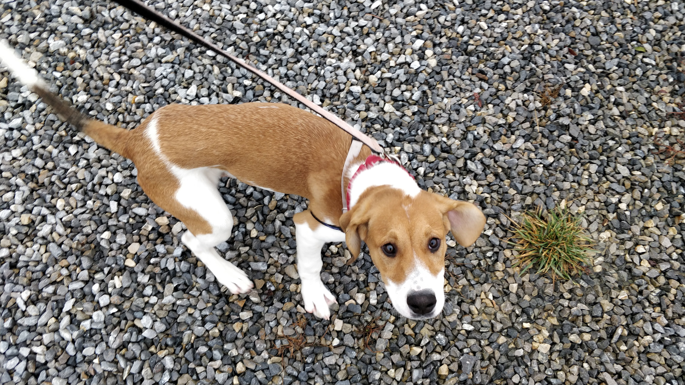 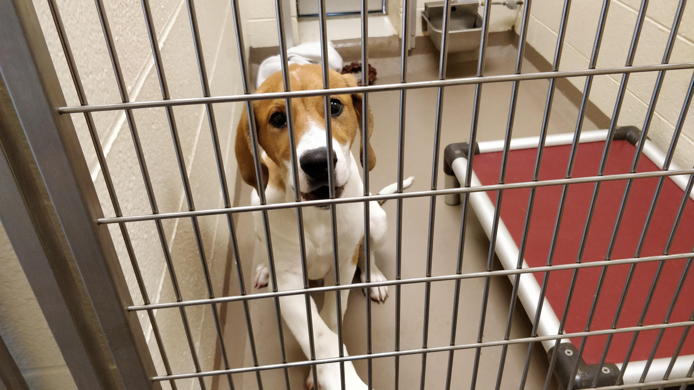 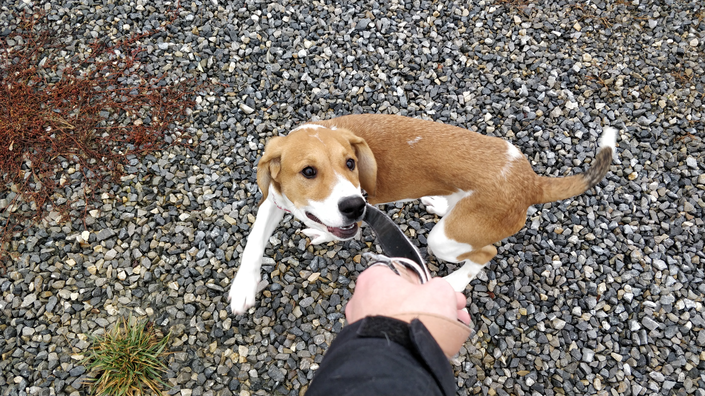
Puppies are notoriously energetic, and while I've only met a few puppies
here and there, Bosco was by far the most energetic and wild dog I've ever
met. I'm not super sure what breed/mix he was, but he's expected to grow up
to be a pretty big guy. As soon as I entered his cage, he began jumping up
and down like crazy - this guy was excited!
Getting Bosco ready to go was an adventure in of itself. His collar went on
just fine, but his harness... well, that took me about 10 minutes of
struggling. After a long time of him chewing on everything he could find,
including that harness, I had to ask for some help from one of the staff
members.
Once I got outside, the excitement and energy continued. He darted back and
forth, sniffing everything he could find, chewing on lumps of grass, and
occasionally looking back at me with that "I wonder if he just saw me do
that" look on his face. His leash was of particular interest to him.
Rather than a leash, he took it as a rope to chew on! He would fling his
neck backwards, chew on it, and inevitably get tangled up. It was a pretty
entertaining walk.
I can say without a doubt that Bosco is one wild dog! He'll definitely calm
down as he grows out of the pupy stage, but I don't think he'll ever lose
all of that energy. His future family will need to be prepared to give him
lots of time to burn that energy! Underneath that excitement, though, I can
tell there's a soft, cuddly, lap-dog side to Bosco.